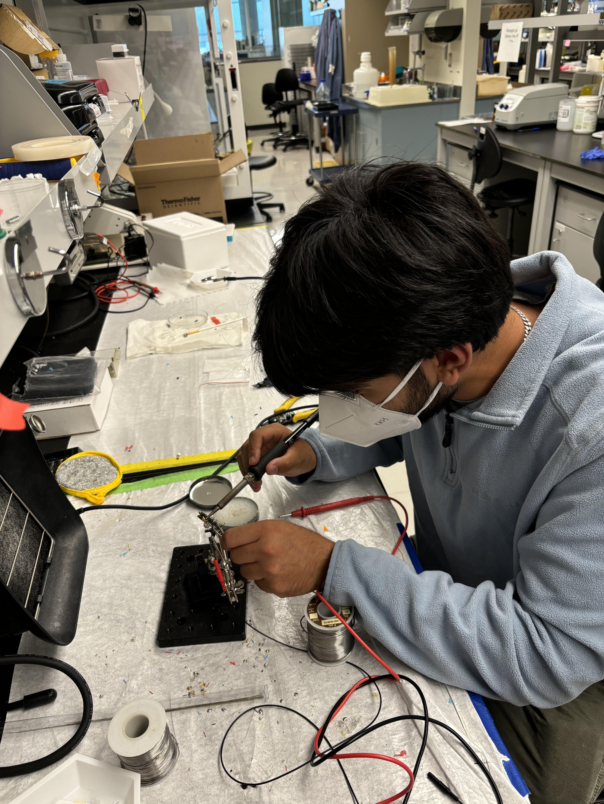
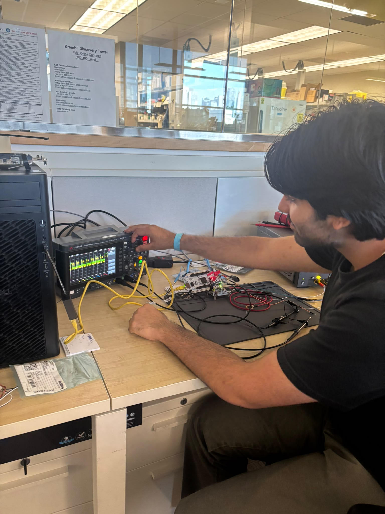
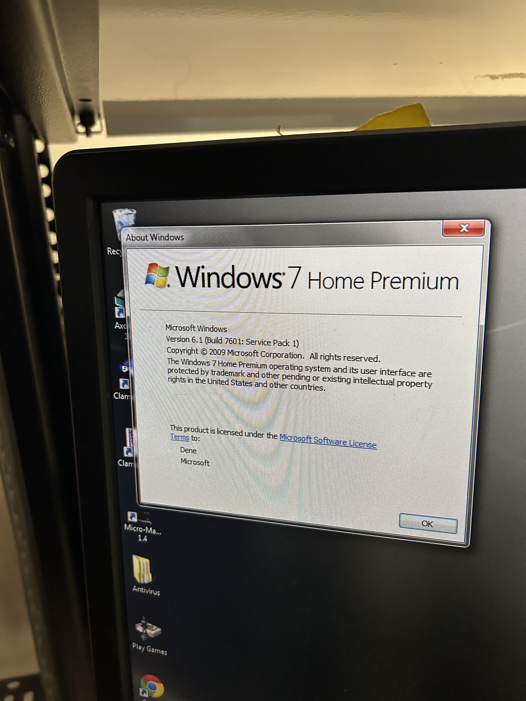

Overview
During my time here, I worked on developing several pieces of software for the lab to enable easier detection and analysis of various neural events alongside some simple analysis and embedded systems work.
Accomplishments
- The Multielectrode Array Population-Level Event (MAPLE) detection software I developed addresses the current gap of robust detection and automatic analysis of population level events from MEA recordings. If you'd like to learn more, check it out on my Github!
- To decrease the tediousness of manual labeling of interictal epileptiform discharges (IEDs) from raw EEG recordings, my amazing coworker and I developed a platform to streamline loading and labeling IEDs alongside built in evaluation of an IED detection algorithm against the ground truth. This one is also on my Github!
- In order to enable concurrent ephys and camera monitoring of animals with intracranial EEG, the same amazing coworker and I set up the SPI connection from an RHS 2116 chip to a STM32 microcontroller and finally networked it using UDP to a visualization window with useful features including stim and seizure timestamps.
- I continue with with the Neuron to Brain Lab on a project aimed at characterizing the propagation tendencies of IEDs between epileptic brain regions and clinically relevant targets.
Other Learning
Aside from the software-based work, I've had the privilege of observing several surgeries, learning how to solder, fixing extremely old (Windows 7 and XP old) computers, and some basic setup/probing of hardware.


